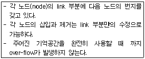
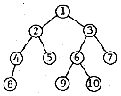
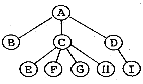
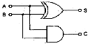
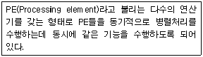
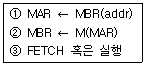
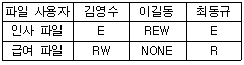
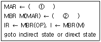
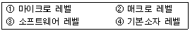

전자계산기조직응용기사 (2006-08-06 기출문제)
1과목: 전자계산기 프로그래밍
1. 어셈블리어의 상수 표현 중 옳지 않은 것은?
- DC C'3456'
- DC X'2356'
- DC C'EFGH'
- DC X'EFGH'
(정답률: 59%)

2. PLC의 입/출력부가 갖추어야 할 기본적인 조건이 아닌 것은?
- 외부기기와 전기적 규격이 일치할 것
- 외부기기로 부터의 잡음(noise)을 막아줄 것
- 입/출력 상태를 감시할 수 있을 것
- 외부기기와의 접속을 어렵게 할 것
(정답률: 95%)
3. C 언어의 printf() 함수에서 실수를 출력할 때 사용하는 형식지정자는?
- %c
- %d
- %f
- %s
(정답률: 82%)
4. 스택과 관계 깊은 명령어 형식은?
- 0-번지 명령어 형식
- 1-번지 명령어 형식
- 2-번지 명령어 형식
- 3-번지 명령어 형식
(정답률: 89%)
5. 객체 지향 프로그래밍 방법의 특징으로 거리가 먼 것은?
- 인간이 문제를 해결하는 방법과 유사한 점이 많아 대형 프로그램을 작성하기가 용이하다.
- 구조적 프로그래밍 방법보다 프로그램을 읽기가 쉽다는 장점이 있다.
- 객체 지향 프로그래밍은 자료가 하나의 묶음으로 이루어져 자료 추상화의 개념을 이용한 방법이다.
- 절차 언어, 함수 언어, 논리 언어 등으로 프로그래밍하는 방법을 객체 지향 프로그래밍 방법이라고 한다.
(정답률: 75%)
6. 시스템 프로그래밍에 가장 적합한 언어는?
- COBOL
- FORTRAN
- BASIC
- C
(정답률: 89%)
7. PLC의 프로그램 방식을 시퀀스 회로를 변화시킨 회로도 방식과 기계 등의 동작을 직접 프로그램한 동작도 방식으로 분류할 경우 회로도 방식에 의한 프로그램의 종류가 아닌 것은?
- 래더도 방식
- 명령어 방식
- 로직 방식
- 플로우챠트 방식
(정답률: 45%)
8. C 언어에서 문자형 자료 선언시 사용하는 것은?
- char
- int
- double
- float
(정답률: 83%)
9. 절대 로더에서 어셈블러가 수행하는 기능은?
- 연결(linking)
- 적재(loading)
- 재배치(relocation)
- 할당(allocation)
(정답률: 37%)
10. 프로그램 수행 순서로 옳은 것은?
- 컴파일러 → 목적 프로그램 → 원시 프로그램
- 원시 프로그램 → 목적 프로그램 → 컴파일러
- 원시 프로그램 → 컴파일러 → 목적 프로그램
- 목적 프로그램 → 원시 프로그램 → 컴파일러
(정답률: 93%)
11. C 언어에서 이스케이프 문자의 약호가 잘못된 것은?
- \t : tab
- \b : backspace
- \f : new line
- \o : null character
(정답률: 94%)
12. 문자열의 내용을 레지스터로 가져오는 어셈블리 명령은?
- LODSB
- CMP
- CBW
- NEG
(정답률: 75%)
13. C 언어의 기억 클래스 중류가 아닌 것은?
- 자동 변수(automatic variables)
- 레지스터 변수(register variables)
- 내부 변수(internal variables)
- 정적 변수(static variables)
(정답률: 100%)
14. C 언어에서 나머지를 구하는 잉여 연산자(modular-operator)는?
- #
- $
- &
- %
(정답률: 100%)
15. 매크로 기능을 가장 올바르게 설명한 것은?
- 어셈블리 언어로 작성한 프로그램을 다른 컴퓨터의 기계어로 변환시키는 기능이다.
- 어셈블리 언어로 작성한 프로그램 내에 다른 고급 언어를 삽입할 수 있는 기능이다.
- 고급언어로 작성된 프로그램 내에 어셈블리 언어의 문장 및 함수 등을 삽입시키는 기능이다.
- 어셈블리 프로그램에서 반복적으로 나타나는 코드들을 묶어 하나의 새로운 명령으로 정의시키는 기능이다.
(정답률: 91%)
16. 객체 지향 개념에서 하나 이상의 유사한 객체들을 묶어서 하나의 공통된 특성을 표현한 것을 무엇이라고 하는가?
- 메시지
- 메소드
- 클래스
- 복잡도
(정답률: 88%)
17. 단항 연산자에 해당하는 것은?
- move
- and
- or
- xor
(정답률: 100%)
18. C 언어의 비트 단위 연산자 중 1의 보수화와 관계되는 것은?
- <<
- |
- &
- ~
(정답률: 83%)
19. PLC의 특징으로 옳지 않은 것은?
- 산술연산, 비교연산 및 데이터 처리까지 쉽게 할 수 있다.
- 동작 상태를 자기 진단하여 이상 시에는 그 정보를 출력한다.
- 컴퓨터와 정보교환을 할 수 있으며, 내부 논리 상태를 모니터 할 수 있다.
- 다수 패턴의 프로그램을 저장, 운전할 수 있으나, 프로그램 변경이 불가능하다.
(정답률: 94%)
20. 작성된 표현식이 BNF에 의해 바르게 작성되었는지를 확인하기 위하여 만든 트리는?
- parse tree
- menu tree
- king tree
- home tree
(정답률: 91%)
2과목: 자료구조 및 데이터통신
21. 네트워크 내에세 패킷의 대기 지연(Queuing delay)이 너무 높아지게 되어 트래픽이 붕괴되지 않도록 네트워크 측면에서 패킷의 흐름을 제어하는 트래픽 제어는?
- 흐름 제어(flow control)
- 혼잡 제어(congestion control)
- 재결합 데드락(reassembly deadlock)
- 데드락 방지(deadlock avoidance) 제어
(정답률: 25%)
22. 인터-네트워킹을 위해 사용되는 네트워크 장비가 아닌 것은?
- 리피터(Repeater)
- 브리지(Bridge)
- 라우터(Router)
- 증폭기(Amplifier)
(정답률: 93%)
23. PCM 과정 중 양자화 과정에서 레벨 수가 128 레빌인 경우 몇 비트로 부호화가 되는가?
- 7 bit
- 8 bit
- 9 bit
- 10 bit
(정답률: 73%)
24. VAN(value added network)의 주요 통신 처리 기능 중 회선의 접속, 각종 제어 순서 등의 데이터 통신을 할 때 통신 순서를 변환하는 기능은?
- Mail Box 기능
- 동보 통신 기능
- Format 변환 기능
- Protocol 변환 기능
(정답률: 93%)
25. 통계적 시분할 다중화 기법의 장점이 아닌 것은?
- 낭비되는 슬롯을 전송하지 않기 때문에 채널의 낭비를 줄인다.
- 동기식 다중화기보다 더 높은 전송 효율을 가진다.
- 각 터미널들의 전송량과 관계없이 일정한 지연시간을 가진다.
- 같은 속도일 경우 동기식 다중화기보다 더 많은 수의 터미널을 접속할 수 있다.
(정답률: 47%)
26. 개방형 시스템의 7계층(OSI-7계층)에서 에러감시 및 제어를 하는 계층을 무엇이라 하는가?
- 물리 계층
- 데이터링크 계층
- 네트워크 계층
- 트랜스포트 계층
(정답률: 42%)
27. 에러 검출 기법 중 에러가 발생한 블록 이후의 모든 블록을 다시 재전송하는 방식은?
- Adaptive ARQ
- Go-back-N ARQ
- Selective ARQ
- Stop-and-wait ARQ
(정답률: 92%)
28. 흐름제어는 슬라이딩 윈도우 방식을 주로 사용한다. 이때 윈도우에 대한 올바른 설명은?
- 프로그램 처리 버퍼의 반도체 갯수
- 전송할 수 있는 프레임의 갯수
- 에러제어 복구 가능 횟수
- 운영체제의 버전 정보
(정답률: 100%)
29. IP address에서 네트워크 ID와 호스트 ID를 구별하는 방식은?
- 서버넷 마스크
- 클래스 E
- 클래스 D
- IPv6
(정답률: 64%)
30. 패리티 체크(parity check)를 하는 이유는?
- 검출된 에러를 정정하기 위하여
- 기억 장치의 용량을 검사하기 위하여
- 전송된 부호의 용량을 검사하기 위하여
- 전송된 부호의 에러를 검출하기 위하여
(정답률: 74%)
31. 해싱 함수의 값을 구한 결과 두 개의 키 값이 동일한 값을 가지는 경우를 무엇이라고 하는가?
- Relation
- Overflow
- Collision
- Clustering
(정답률: 93%)
32. 다음 설명에 해당되는 자료구조는?

- 큐(queue)
- 스택(stack)
- 리스트(list)
- 트리(tree)
(정답률: 77%)
33. 다음의 트리에 대하여 inorder 방법으로 traverse 한 결과는?

- 1, 2, 4, 8, 5, 3, 6, 9, 10, 7
- 8, 4, 5, 2, 9, 10, 6, 7, 3, 1
- 1, 2, 3, 4, 5, 6, 7, 8, 9, 10
- 8, 4, 2, 5, 1, 9, 6, 10, 3, 7
(정답률: 72%)
34. 데이터베이스 관리 시스템의 필수 기능에 해당하지 않는 것은?
- 정의 기능
- 조작 기능
- 번역 기능
- 제어 기능
(정답률: 89%)
35. 해싱(hashing)과 가장 직접적인 관계에 있는 file은?
- Sequential file
- Indexed sequential file
- Direct file
- Inverted file
(정답률: 79%)
36. 다음 트리의 차수(degree)는?

- 2
- 3
- 4
- 9
(정답률: 93%)
37. 의미 없이 존재하는 데이터를 수집해서 사용자의 용도에 맞게 가공처리를 한 후, 적절한 의사 결정을 할 수 있도록 가공 처리된 지식을 무엇이라고 하는가?
- 정보(information)
- 자료(data)
- 관계(relation)
- 널 값(null value)
(정답률: 90%)
38. 3단계 데이터베이스의 종류에 해당하지 않는 것은?
- 관계 스키마
- 내부 스키마
- 외부 스키마
- 개념 스키마
(정답률: 95%)
39. 데이터베이스 설계 단계 순서로 옳은 것은?
- 개념적 설계 → 물리적 설계 → 논리적 설계
- 물리적 설계 → 개념적 설계 → 논리적 설계
- 논리적 설계 → 물리적 설계 → 개념적 설계
- 개념적 설계 → 논리적 설계 → 물리적 설계
(정답률: 89%)
40. 제일 먼저 입력된 원소가 우선적으로 출력되며, 원소의 삽입은 뒤(rear)에서, 삭제(front)는 앞에서 이루어지는 자료 구조는?
- 큐
- 스택
- 트리
- 그래프
(정답률: 95%)
3과목: 전자계산기구조
41. 내용에 이해 접근하는 내용 주소화 기억장치(content addressable memory)인 것은?
- associative memory
- bubble memory
- virtual memory
- DMA
(정답률: 88%)
42. 10진법의 한 자릿수를 2진법으로 나타내기 위해 최소한 몇 개의 비트가 필요한가?
- 10비트
- 8비트
- 6비트
- 4비트
(정답률: 80%)
43. 그림과 같은 회로는 무엇인가?

- 반가산기
- 전가산기
- 반감산기
- 전감산기
(정답률: 82%)
44. 컴퓨터에서 사용하는 명령어의 기능이 아닌 것은?
- 전달 기능
- 제어 기능
- 연산 기능
- 번역 기능
(정답률: 95%)
45. 한 명령의 execute cycle 중에 interrupt 요청을 받아 interrupt를 처리한 후 실행되는 사이클은?
- fetch cycle
- indirect cycle
- execute cycle
- direct cycle
(정답률: 80%)
46. 논리 마이크로 동작 중 Exclusive-OR 와 같은 동작을 하는 것은?
- Selective-set 동작
- mask 동작
- compare 동작
- selective-clear 동작
(정답률: 43%)
47. 중앙연산처리장치에서마이크로 오퍼레이션이 순서적으로 일어나게 하기 위해 필요한 것은?
- 레지스터
- 누산기
- 스위치
- 제어신호
(정답률: 90%)
48. 명령어의 명령 코드 부분은 어느 레지스터로 이동하는가?
- instruction register
- index register
- address register
- flag register
(정답률: 69%)
49. 다음은 어느 구조에 대한 설명인가?

- 리스트 처리기
- 배열 처리기
- 파이프라인 처리기
- 데이터 흐름기계
(정답률: 36%)
50. STACK을 올바르게 설명한 것은?
- FIFO 구조를 갖는다.
- 1-Address 구조를 갖는다.
- PUSH 명령에 의해 데이터를 꺼낸다.
- Return Address를 저장하기 위한 memory이다.
(정답률: 79%)
51. 다음 주소 지정 방식 중 속도가 가장 빠른 것은?
- immediate addressing mode
- direct addressing mode
- indirect addressing mode
- index register
(정답률: 73%)
52. 레지스터(Register)에서 일반적으로 사용되는 기억소자는?
- Flip-Flop
- Magnetic core
- Magnetic tape
- Magnetic disk
(정답률: 80%)
53. 다음 마이크로 오퍼레이션과 관련 있는 사이클은?

- FETCH CYCLE
- EXECUTE CYCLE
- INDIRECT CYCLE
- INTERRUPT CYCLE
(정답률: 63%)
54. 중앙처리장치와 기억장치 사이에 실질적인 대역폭(band width)을 늘리기 위한 방법은?
- 메모리 인터리빙
- 자기기억 장치
- RAM
- 폴링 방법
(정답률: 100%)
55. 반가산기에서 입력을 X, Y라 하면 이에 대한 출력 부분에 캐리(carry) 값은?
- X·Y
- X
- Y
- X+Y
(정답률: 77%)
56. op-code의 기능이 아닌 것은?
- 주소지정
- 함수연산
- 전달
- 제어
(정답률: 57%)
57. 명령어가 오프레이션 코드(OP code) 6비트, 어드레스 필드 16비트로 되어 있다. 이 명령어를 쓰는 컴퓨터의 최대 메모리 용량은?
- 16K word
- 32K word
- 64K word
- 1M word
(정답률: 63%)
58. 동시에 여러 개의 입·출력장치를 제어할 수 있는 채널은?
- Duplex Channel
- Register Channel
- Selector Channel
- Multiplexer Channel
(정답률: 90%)
59. 누산기가 반드시 필요한 주소지정방식은?
- 0-Address 주소지정 방식
- 1-Address 주소지정 방식
- 2-Address 주소지정 방식
- 3-Address 주조지정 방식
(정답률: 79%)
60. 자기디스크에서 데이터를 접근하는데 걸리는 시간에 포함되지 않는 것은?
- 입력시간(reading time)
- 탐색시간(seek time)
- 전송시간(transmission time)
- 회전지연시간(rotational delay time)
(정답률: 79%)
4과목: 운영체제
61. 매크로 프로세스가 수행해야 하는 기본적인 기능에 해당하지 않는 것은?
- 매크로 구문 인식
- 매크로 호출 인식
- 매크로 정의 인식
- 매크로 정의 저장
(정답률: 65%)
62. 스케줄링의 목적으로 가장 거리가 먼 것은?
- 모든 작업들에 대해 공평성을 유지하기 위하여
- 단위시간당 처리량을 최대화하기 위하여
- 응답시간을 빠르게 하기 위하여
- 운영체제의 오버헤드를 최대화하기 위하여
(정답률: 87%)
63. 운영체제의 일반적인 역할이 아닌 것은?
- 사용자들 간의 하드웨어의 공동사용
- 자원의 효과적인 운영을 위한 스케줄링
- 입/출력에 대한 보조역할
- 실행 가능한 목적(object) 프로그램 생성
(정답률: 75%)
64. 비선점 스케줄링(Non-Preemptive)에 해당하지 않는 것은?
- SRT(Shortest Remaining Time)
- FIFO(First In First Out)
- SJF(Shortest Job First)
- HRN(Highest Response-ratio Next)
(정답률: 54%)
65. UNIX 운영체제는 거의 대부분의 코드가 고급언어로 기술되어 있다. 이 고급언어는?
- PL/1
- Pascal
- C
- Ada
(정답률: 89%)
66. 프로세스의 정의와 가장 관련이 적은 것은?
- 실행중인 프로그램
- PCB를 가진 프로그램
- CPU가 할당되는 실체
- 디스크에 저장된 프로그램
(정답률: 71%)
67. 중앙 컴퓨터와 직접 연결되어 응답이 빠르고 통신비용이 적게 소요되지만, 중앙 컴퓨터에 장애가 발생되면 전체 시스템이 마비되는 분산 시스템의 위상 구조는?
- 완전연결(fully connected) 구조
- 성형(star) 구조
- 계층(hierarchy) 구조
- 환형(ring) 구조
(정답률: 100%)
68. UNIX에서 커널의 기능이 아닌 것은?
- 입/출력 관리
- 명령어 해석 및 실행
- 기억장치 관리
- 프로세스 관리
(정답률: 80%)
69. 인터럽트의 종류 중 컴퓨터 자체 내의 기계적인 장애나 오류로 인하여 발생하는 것은?
- 입/출력 인터럽트
- 외부 인터럽트
- 기계 검사 인터럽트
- 프로그램 검사 인터럽트
(정답률: 80%)
70. 교착 상태 발생의 필요 충분조건이 아닌 것은?
- 상호 배제(mutual exclusion)
- 점유와 대기(hold and wait)
- 환형 대기(circular wait)
- 선점(preemption)
(정답률: 74%)
71. 새로 들어온 프로그램과 데이터를 주기억장치 내의 어디에 놓을 것인가를 결정하기 위한 주기억장치 배치전략에 해당하지 않는 것은?
- best-fit
- worst-fit
- first-fit
- last-fit
(정답률: 87%)
72. 디스크 스케줄링 기법 중에서 탐색 거리가 가장 짧은 요청이 먼저 서비스를 받는 기법이며, 탐색 패턴이 편중되어 안쪽이나 바깥쪽 트랙이 가운데 트랙보다 서비스를 덜 받는 경향이 있는 기법은?
- FCFS
- C-SCAN
- LOOK
- SSTF
(정답률: 78%)
73. 로더(loader)의 기능으로 옳지 않은 것은?
- 할당(allocation)
- 링킹(linking)
- 번역(translation)
- 재배치(relocation)
(정답률: 79%)
74. 실행 중인 프로세스가 일정 시간 동안에 참조하는 페이지의 집합을 의미하는 것은?
- working set
- locality
- fragmentation
- segment
(정답률: 89%)
75. 고속의 중앙처리장치와 저속의 입/출력 장치 사이에 존재하는 속도의 격차를 극복하고 이들 사이의 입/출력 작업이 원활하게 수행될 수 있도록 중재하는 기법은?
- spooling
- swapping
- paging
- scatter loading
(정답률: 83%)
76. 유닉스시스템에서 명령어 해석기로 사용자의 명령어를 인식하여 필요한 프로그램을 호출하고 그 명령을 수행하는 기능을 담당하는 것은?
- 유틸리티
- 쉘
- 커널
- IPC
(정답률: 79%)
77. UNIX에서 각 파일에 대한 정보를 기억하고 있는 자료구조로서 파일 소유자의 식별번호, 파일 크기, 파일의 최종 수정시간, 파일링크 수 등의 내용을 가지고 있는 것은?
- 슈퍼 블록(super block)
- inode(index node)
- 디렉토리(directory)
- 파일 시스템 마운팅(mounting)
(정답률: 77%)
78. CPU의 개입 없이 입출력 장치와 주기억 장치와의 데이터 전송이 이루어지는 방법으로 프로그램이 실행되는 동안에 입출력을 위한 인터럽트의 발생횟수를 최소화시켜 컴퓨터 시스템의 효율을 높이기 위한 방법은?
- DMA
- Blocking
- Spooling
- Scanning
(정답률: 88%)
79. 다음과 같은 접근제어 행렬에 대한 설명 중 옳은 것은? (단, E: 실행가능, R: 판독가능, W: 기록가능, NONE: 모든 권한 없음)

- 김영수는 인사와 급여파일을 판독하고 기록할 수 있다.
- 이길동은 인사와 급여파일을 읽을 수 있다.
- 최동규는 급여파일의 내용을 변경할 수 있다.
- 이길동은 인사파일에 대한 모든 권한을 가지고 있다.
(정답률: 89%)
80. 너무 자주 페이지 교환이 발생하여 어떤 프로세스가 프로그램 수행에 소요되는 시간보다 페이지 교환에 소요되는 시간이 더 많은 경우를 무엇이라고 하는가?
- locality
- thrashing
- working set
- pre-paging
(정답률: 93%)
5과목: 마이크로 전자계산기
81. 다음 중 제어프로그램(Control Program)에 속하지 않는 것은?
- Data Management Program
- Supervisor Program
- Job Management Program
- Language Translator Program
(정답률: 85%)
82. 마이크로프로세서의 내부 레지스터인 PC(Program Counter)의 기능은?
- 프로그램 시행 중 읽어들인 자료의 개수를 헤아린다.
- 다음에 시행할 명령어의 주소를 기억한다.
- 현재 시행 중인 명령어의 주소를 기억한다.
- 현재 읽어들일 자료가 기억된 주소를 기억한다.
(정답률: 79%)
83. 전자계산기의 제어 상태 중 명령을 인출하여 해독하는 단계인 Fetch State에 대한 마이크로 오퍼레이션이다. 괄호 부분을 완성하시오.

- ① PC ② PC ← PC+1
- ① IR ② IR ← IR+1
- ① MBR ② PC ← PC+1
- ① PC ② MAR ← PC+1
(정답률: 67%)
84. 다음 컴퓨터의 레벨 구조에서 낮은 구조에서 높은 구조의 순으로 되어 있는 것은?

- ①→②→③→④
- ④→①→②→③
- ③→②→①→④
- ④→②→①→③
(정답률: 80%)
85. Interpreter 방식의 장점으로 알맞은 것은?
- 번역 속도가 Compiler보다 빠르다.
- Error 수정이 Compiler보다 유용하다.
- 반복적인 번역이 필요치 않다.
- 외부에 Execute file이 생성된다.
(정답률: 60%)
86. 리플래시(refresh) 동작이 필요한 기억장치는?
- dynamic RAM
- static RAM
- PROM
- EAROM
(정답률: 83%)
87. microprocessor 내의 연산 결과가 틀렸음을 나타내주는 flag는?
- CARRY
- ZERO
- OVERFLOW
- SIGN
(정답률: 77%)
88. 마이크로컴퓨터와 입·출력장치 인터페이스(Interface)를 위하여 궁극적으로 일치 시켜줄 필요가 없는 것은?
- 시스템 버스(bus)
- 전기적인 신호(signal)
- 정보교환 코드(code)
- 전송제어 방식(protocol)
(정답률: 60%)
89. 컴퓨터 시스템을 사용하기 위해 근본적으로 필요한 프로그램으로 운영체제(OS), 각종 언어의 컴파일러, 링커, 로더, 라이브러리 프로그램, 진단 프로그램 등을 무엇이라 하는가?
- Application Program
- System Program
- Problem Program
- Macro Program
(정답률: 67%)
90. 주기억장치의 실제용량보다 훨씬 더 큰 기억공간을 사용자에게 제공하며, 운영체제에 의해 관리되는 기억장치 시스템은?
- 가상 기억장치
- 캐시 기억장치
- 연관 기억장치
- 모듈러 기억장치
(정답률: 69%)
91. 주소 선(address line)이 16개인 CPU의 직접 액세스가 가능한 메모리 공간은 몇 Kbyte 인가?
- 32
- 64
- 128
- 256
(정답률: 62%)
92. 입·출력장치의 속도와 CPU의 속도 차이로 인한 단점을 해결하기 위하여 고려된 인터페이스(interface) 장치는?
- channel 장치
- 지능 단말 장치
- Modem 장치
- 멀티플렉스 장치
(정답률: 88%)
93. 프로그램을 작성하여 기계어 번역시 또는 실행시 문법적 오류나 논리적 오류를 바로 잡는 과정을 무엇이라 하는가?
- Assembly
- Loading
- Debugging
- Editing
(정답률: 82%)
94. 다음 중 휘발성 메모리가 아닌 것은?
- dynamic RAM
- CCD
- Static RAM
- magnetic bubble
(정답률: 62%)
95. 시프트 레지스터(shift register) 의 입·출력 방식 중 시간이 가장 적게 걸리는 것은?
- 직렬입력-직렬출력
- 직렬입력-병렬출력
- 병렬입력-직렬출력
- 병렬입력-병렬출력
(정답률: 75%)
96. 논리 마이크로 동작에 속하지 않는 것은?
- Mask 동작
- Selective-set 동작
- Selective-supplement 동작
- Selective-complement 동작
(정답률: 67%)
97. CPU와 여러 개의 I/O 장치가 연결되어 있을 때 I/O를 하나씩 순차적으로 점검하여 인터럽트를 요구한 I/O를 찾아내는 인터럽트 방식을 무엇이라고 하는가?
- 벡터링(vectoring)
- 폴링(polling)
- 매핑(mapping)
- 멀티플렉싱(multiplexing)
(정답률: 94%)
98. 다음 중 Cycle steal과 관련 있는 것은?
- DMA
- Data buffer
- Internal bus
- Interrupt
(정답률: 69%)
99. 컴퓨터의 모든 행위를 감시하고, 통제하는 일련의 거대한 소프트웨어의 집합체를 무엇이라 하는가?
- 오프레이팅 시스템(operation system)
- 어셈블러(assembler)
- 컴파일러(compiler)
- 로더(loader)
(정답률: 94%)
100. 기억용량이 2Kbyte인 PROM의 경우 최소한 몇 개의 address line이 필요한가?
- 10
- 11
- 12
- 13
(정답률: 70%)
이유는 X는 16진수를 나타내는 접두어이고, EFGH는 16진수 4자리를 나타내는데, X 접두어는 16진수를 나타내는 것이므로 EFGH는 이미 16진수로 인식된다. 따라서 X 접두어를 사용할 필요가 없다.
따라서 올바른 상수 표현은 "DC C'3456'", "DC X'2356'", "DC C'EFGH'"이다.